#include<iostream>
#include<fstream>
#include<stdio.h>
#include<conio.h>
#include<string.h>
#include<ctype.h>
#include<process.h>
using namespace std;
#include "windows.h"
void gotoxy(int x, int y)
{
COORD coord;
coord.X = x;
coord.Y = y;
SetConsoleCursorPosition(GetStdHandle(STD_OUTPUT_HANDLE), coord);
}
void add_data(); //adding user
void viewall(); //show all entries
void searchadmno(); //searching given roll number
void delete_(); //deleting given roll number
void modify(); //modifying given roll number
void details();
void sc(); //banner used in every page
int disp(int bl);
void screen1(); //screen with admin and exit
void pass(); //admin login screen
void adscreen(); //admin screen with all option(6)
void userscreen();
void user(int ch);
void adm(int ch);
void exi();
int count();
int main(int argc, char **argv)
{
// system("cls");
// clrscr();
screen1();
return 0;
}
class student
{
int admno;
char name[30];
int age;
char sex[6];
char phone[12];
public:
void enter();
void display();
int last_member();
void modify_data();
int retadmno();
};
fstream f;
student a;
int student::retadmno()
{
return admno;
}
int student::last_member()
{
int count=1000;
admno=1000;
fstream file;
file.open("student.dat",ios::in);
file.seekg(0,ios::beg);
while(file.read((char*)this,sizeof(student)))
{
count=admno;
}
file.close();
return count;
}
void student::modify_data()
{
char nm[20]=" ",sx[20]=" ",ph[20]=" ";
int ag;
cout<<"ENTER NAME : (enter . to retain old one)\n";
cout<<"ENTER AGE : (enter 1 to retain old one)\n";
cout<<"ENTER SEX : (enter . to retain old one)\n";
cout<<"ENTER PHONE NO : (enter . to retain old one)\n";
gotoxy(17,16);
cin.ignore();
cin.getline(name, sizeof(nm));
gotoxy(17,17);
cin>>ag;
gotoxy(17,18);
cin>>sx;
gotoxy(17,19);
cin>>ph;
if(strcmp(nm,".")!=0)
strcpy(name,nm);
if(ag!=1)
age=ag;
if(strcmp(sx,".")!=0)
strcpy(sex,sx);
if(strcmp(ph,".")!=0)
strcpy(phone,ph);
cout<<"\n\n\n\t\tRecord modified successfully";
gotoxy(25,25);
cout<<"press any key to go back!!!!!!!!";
}
void student::enter()
{
system("cls");
// clrscr();
sc();
cout<<"\n\n STUDENT REGISTRATION \n";
cout<<" -=************************=- ";
admno=last_member();
admno++;
cout<<"\n\n\t Enter name \t : (press ! to go back)";
gotoxy(39,9);
cin.ignore();
cin.getline(name, sizeof(name));
if(strcmp(name,"!")==0)
{
adscreen();
}
cout<<"\t Enter Age : ";
cin>>age;
cout<<"\t Enter sex : ";
cin>>sex;
cout<<"\t Enter phone number : ";
cin>>phone;
// cout<<"\n Thank you for registering.....(:";
cout<<"\n\n\t\tYour admission no is "<<admno;
}
void student::display()
{
cout<<"\n";
cout<<"\tDetails of the searched student\n";
cout<<"------------------------------------------------------------------------------\n";
cout<<"\n Admission Number :";
cout<<admno<<"\n";
cout<<" Name :";
for(int i=0;name[i]!='\0';i++)
name[i]=toupper(name[i]);
cout<<name<<"\n";
cout<<" Age :";
cout<<age<<"\n";
cout<<" Sex :";
cout<<sex<<"\n";
cout<<" Phone :";
cout<<phone<<"\n";
cout<<"_______________________________________________________________________________\n";
cout<<"_______________________________________________________________________________\n";
}
void screen1()
{
start:
system("cls");
// clrscr();
char ch;
sc();
cout<<"\n\n";
cout<<"\t\t[A].ADMINISTRATOR\n";
cout<<"\n";
cout<<"\t\t[E].EXIT\n\n";
cout<<"SELECT YOUR OPTION: ";
cin>>ch;
switch(ch)
{
case 'A':
case 'a':system("cls");
// clrscr();
pass();
adm:
adscreen();
goto adm;
case 'E':
case 'e':exi();
default:cout<<"So Sorry!!!Unknown Choice";
getch();
goto start;
}
}
void pass()
{
sc();
char c[20];
double x;
char user[20];
loop:
gotoxy(30,12);
cout<<"USER NAME:";
gotoxy(30,13);
cout<<"PIN :";
gotoxy(41,12);
cin>>user;
cout<<"\n\n";
gotoxy(41,13);
for(int i=0;i<9;i++)
{
c[i]=getch();
cout<<"*";
}
c[9]='\0';
getch();
if(((strcmp(user,"user")==0)||(strcmp(user,"USER")==0))&&(strcmp(c,"narikodan")==0))
{system("cls");
// clrscr();
sc();
gotoxy(37,13);
cout<<"WELCOME";
for(x=0;x<1;x++);
}
else if((strcmp(user,"narikul")!=0)&&(strcmp(user,"NARIKUL")!=0))
{
system("cls");
// clrscr();
sc();
gotoxy(25,13);
cout<<"Oops!!! ADMINISTRATION NOT RESPONDING\n\t\t\t (user name is wrong!!!!!)";
getch();system("cls");
pass();
}
else if(strcmp(c,"password")!=0)
{
system("cls");
// clrscr();
sc();
gotoxy(25,13);
cout<<"Oops!!! ADMINISTRATION NOT RESPONDING\n\t\t\t (password is wrong!!!!!)";
getch();system("cls");
pass();
}
}
void sc()
{
cout<<"\n===============================================================================\n";
cout<<"---------------------=+#INDIRA GANDHI PUBLIC SCHOOL#+=-------------------------\n";
cout<<"===============================================================================\n";
}
void adscreen()
{
char ch;
system("cls");
// clrscr();
sc();
cout<<"\n\t[1] STUDENT REGISTRATION \n\n";
cout<<"\t[2] SHOW WHOLE ENTRIES \n\n";
cout<<"\t[3] SEARCH FOR STUDENT BY ADMISSION NO \n\n";
cout<<"\t[4] MODIFY A STUDENT'S DETAILS \n\n ";
cout<<"\t[5] DELETE A STUDENT'S DETAILS \n\n";
cout<<"\t[6] Back \n\n";
cout<<"\n\t\t## Enter your choice : ";
cin>>ch;
adm(ch);
getch();
}
void exi()
{
system("cls");
// clrscr();
sc();
cout<<"\n\n THANKS FOR USING :).............\n";
cout<<"\n\nDeveloped by NARIKODAN HRIDUL\n\n";
cout<<" ____ ___ ___ ___ ___ ____\n";
cout<<" / \\ / \\ / \\ | \\ | \\ \\ / | | | |\n";
cout<<" | | | | | | \\ |___/ \\/ |___ | | |\n";
cout<<" | _ | | | | | / | \\ / | | | |\n";
cout<<" \\___/ | \\___/ \\___/ |___/ |___/ / |____ o o o\n";
cout<<"\n\n \\(=_= ) (=_=)/\n";
cout<<"\n *_* *_* *_* *_* *_* *_* *_* *_* *_* *_* *_* \n\n";
exit(0);
}
void adm(int ch)
{
switch(ch)
{
case '1':add_data();
break;
case '2':viewall();
break;
case '3':searchadmno();
break;
case '4':modify();
break;
case '5':delete_();
break;
case '6':screen1();
break;
default:cout<<"So Sorry !!!Unknown Choice\n TRY AGAIN....";
}
}
void add_data()
{
f.open("student.dat",ios::app);
a.enter();
f.write((char*)&a,sizeof(student));
f.close();
gotoxy(20,24);
cout<<"press any key to go back!!!!!!!!";
}
void viewall()
{
system("cls");
// clrscr();
sc();
cout<<"\n -=SCHOOL REGISTER=- \n";
cout<<"_______________________________________________________________________________\n";
cout<<"_______________________________________________________________________________\n";
cout<<"_______________________________________________________________________________\n";
int i=1;
f.open("student.dat",ios::in|ios::binary);
while(f.read((char*)&a,sizeof(student)))
{
cout<<"Sno.:"<<i;
a.display();
i++;
cout<<"_______________________________________________________________________________\n";
}
f.close();
cout<<"\n\t\tpress any key to go back!!!!!!!!!!!!";
}
void searchadmno()
{
int n;
system("cls");
// clrscr();
sc();
int flag=0;
gotoxy(20,13);
cout<<"## Enter the student admission no to search: ";
cin>>n;
f.open("student.dat",ios::in);
while(f.read((char*)&a,sizeof(student)))
{
if(a.retadmno()==n)
{
system("cls");
// clrscr();
sc();
a.display();
flag=1;
}
}
f.close();
if(flag==0)
{
system("cls");
// clrscr();
sc();
gotoxy(28,13);
cout<<"Oops !!Record not found!!";
gotoxy(25,20);
cout<<"press any key to go back!!!!!!!";
}
else
{
gotoxy(25,20);
cout<<"press any key to go back!!!!!!!";
}
}
int count()
{
int i=1;
f.open("student.dat",ios::in|ios::binary);
while(f.read((char*)&a,sizeof(student)))
{
i++;
}
f.close();
return i;
}
int disp(int bl)
{
system("cls");
// clrscr();
sc();
int flag=1;
f.open("student.dat",ios::in);
while(f.read((char*)&a,sizeof(student)))
{
if(a.retadmno()==bl)
{
a.display();
flag=0;
}
}
f.close();
if(flag==1)
{
system("cls");
// clrscr();
sc();
gotoxy(28,13);
cout<<"Oops !!Record not found!!";
gotoxy(25,20);
cout<<"press any key to go back!!!!!!!";
}
return flag;
}
void modify()
{
system("cls");
// clrscr();
sc();
int bl,t;
char ch;
long pos;
gotoxy(20,13);
cout<<"## Please Enter the admission no to be modified: ";
cin>>bl;
t=disp(bl);
if(t==0)
{
f.open("student.dat",ios::in|ios::out);
cout<<"\t\t\tDo you want to modify it(Y/N)???:";
cin>>ch;
if(ch=='y'||ch=='Y')
{
while(!f.eof())
{
pos=f.tellg();
f.read((char*)&a,sizeof(student));
if(a.retadmno()==bl)
{
a.modify_data();
f.seekg(pos);
f.write((char*)&a,sizeof(student));
break;
}
}
}
else
{
gotoxy(25,25);
cout<<"press any key to go back!!!!!!!";
}
f.close();
}
}
void delete_()
{
int no,t;
char ch;
system("cls");
// clrscr();
sc();
gotoxy(22,13);
cout<<"## Enter the admission no to delete: ";
cin>>no;
t=disp(no);
if(t==0)
{
gotoxy(21,18);
cout<<"DO YOU WANT TO DELETE IT ? (Y/N) : ";
cin>>ch;
if(ch=='y'||ch=='Y')
{
f.open("student.dat",ios::in);
fstream f2;
f2.open("tem.dat",ios::out);
f2.seekg(0);
while(f.read((char*)&a,sizeof(student)))
{
if(a.retadmno()!=no)
{
f2.write((char*)&a,sizeof(student));
}
}
f2.close();
f.close();
remove("student.dat");
rename("tem.dat","student.dat");
// clrscr();
system("cls");
sc();
gotoxy(27,13);
cout<<"Record Deleted Successfully";
gotoxy(25,20);
cout<<"press any key to go back!!!!!!!";
}
else
{
gotoxy(25,25);
cout<<"press any key to go back!!!!!!!";
}
}
}
 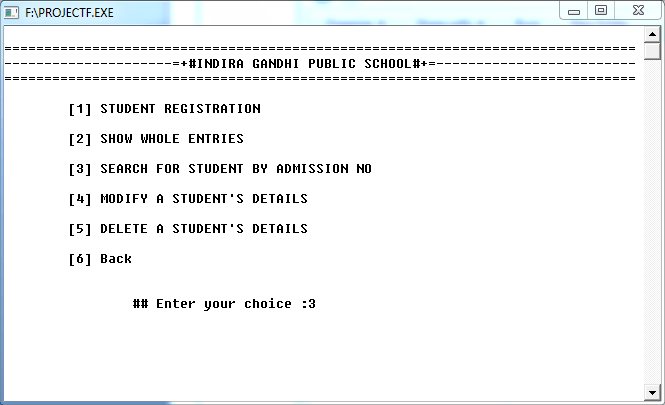
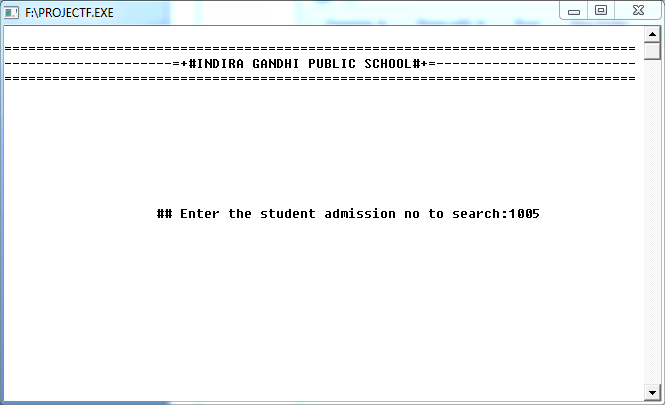
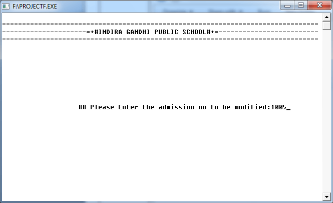
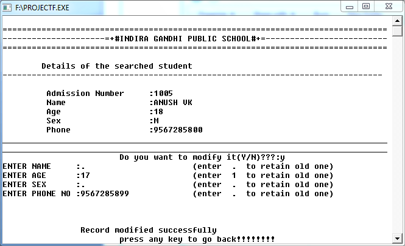
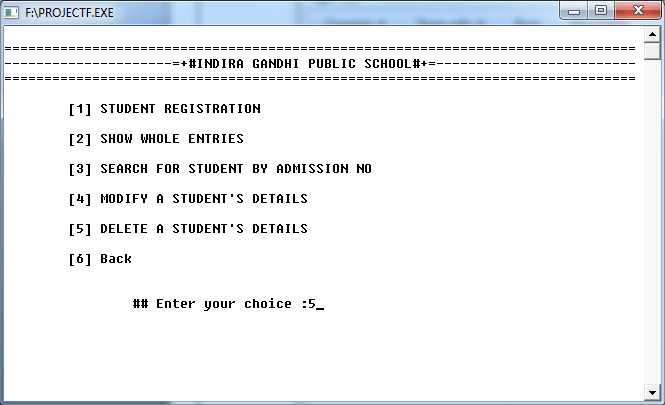
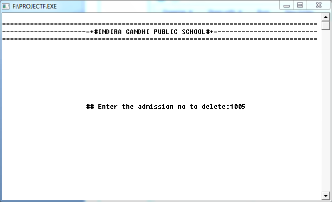
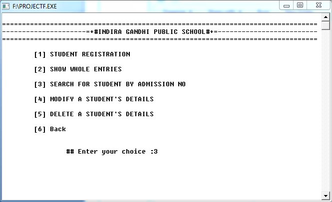
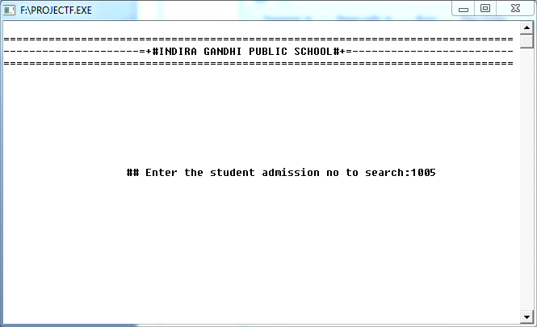
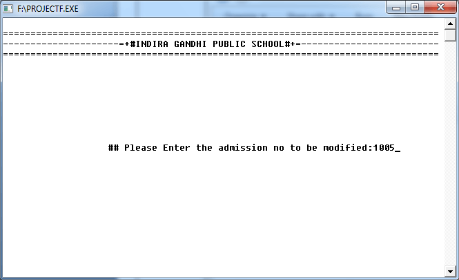
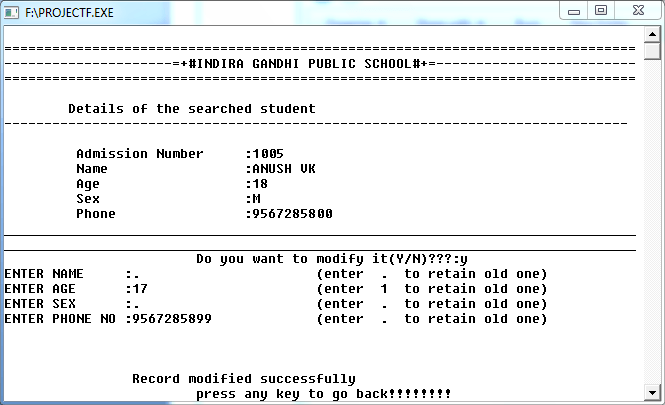
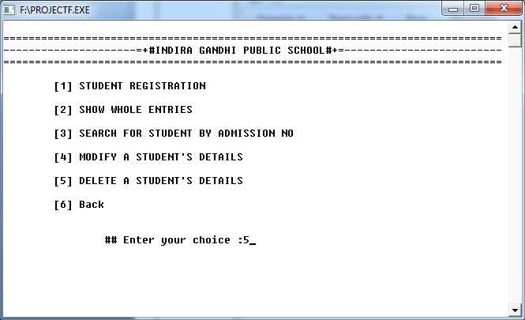
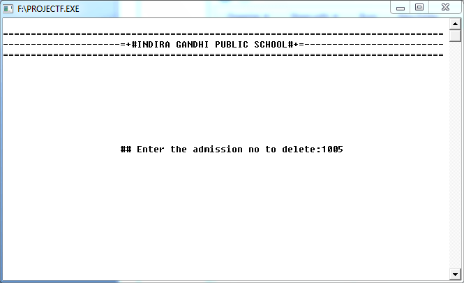

 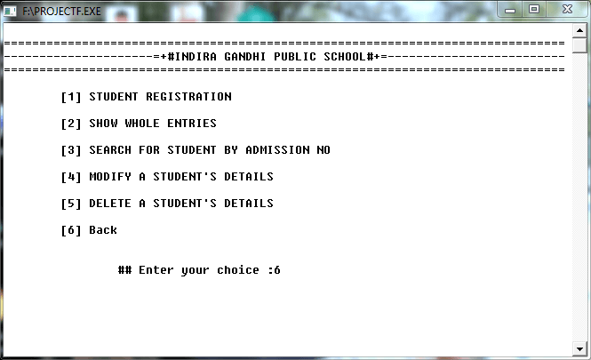
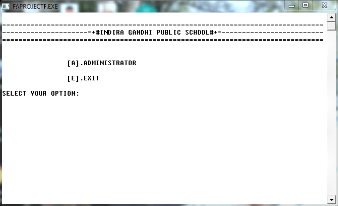
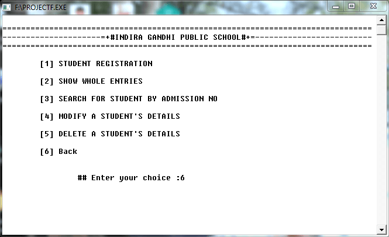
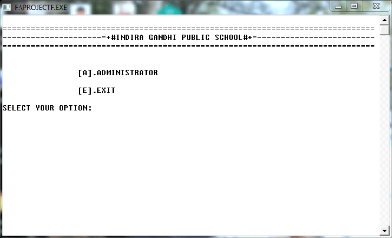